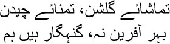
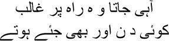

30

I want to see the beauty of the garden,
pluck the flowers too …
My heart is sinful, O Creator of spring
 may not have been earning much money, Mirza sahib, but I began to enjoy life with Shafia. She used to love me with all her heart. And the most important thing was that she wanted to understand me. So despite her initial objection to my drinking, she accepted it eventually. But she kept a strict watch all the time to ensure I didn’t overdo it. You cannot imagine the attention I paid to our home, my brothers. I used to sweep the floor myself, and dust and clean everything. I helped with the cooking too sometimes. I used to enjoy cooking a lot, particularly kebabs. The aroma of spices and roasting meat was intoxicating. I was getting more and more involved with the world of cinema in Bombay; once in this world, I felt like Amir Hamza, with a thousand adventures awaiting me. After I went to Pakistan, I wrote Ganjay Farishtay—The Bald Angels—about all those colourful people from Bombay’s film world. I wanted to see their real selves, without costumes or cosmetics. Some people had objected to this. But to hell with a society that launders a man’s exploits after his death to hold them up as clean and honourable. I remember Ismat’s story ‘Dozakhi’ being published in Saki. She had stripped her dead brother Azim Beg Chughtai naked in it. After reading the story, my sister Iqbal had said, ‘What a strange girl Ismat is. She hasn’t even spared her own dead brother. Is it right to put such things into a story?’
may not have been earning much money, Mirza sahib, but I began to enjoy life with Shafia. She used to love me with all her heart. And the most important thing was that she wanted to understand me. So despite her initial objection to my drinking, she accepted it eventually. But she kept a strict watch all the time to ensure I didn’t overdo it. You cannot imagine the attention I paid to our home, my brothers. I used to sweep the floor myself, and dust and clean everything. I helped with the cooking too sometimes. I used to enjoy cooking a lot, particularly kebabs. The aroma of spices and roasting meat was intoxicating. I was getting more and more involved with the world of cinema in Bombay; once in this world, I felt like Amir Hamza, with a thousand adventures awaiting me. After I went to Pakistan, I wrote Ganjay Farishtay—The Bald Angels—about all those colourful people from Bombay’s film world. I wanted to see their real selves, without costumes or cosmetics. Some people had objected to this. But to hell with a society that launders a man’s exploits after his death to hold them up as clean and honourable. I remember Ismat’s story ‘Dozakhi’ being published in Saki. She had stripped her dead brother Azim Beg Chughtai naked in it. After reading the story, my sister Iqbal had said, ‘What a strange girl Ismat is. She hasn’t even spared her own dead brother. Is it right to put such things into a story?’
I had told her, ‘If you can write a story like this after my death, Iqbal, I swear on the lord, I’m ready to die right now.’
— Me write about you? Write what?
— That your Saadat is the lowest worm in hell.
— You’re mad, Saadat. Does anyone like thinking of their favourite people this way?
— Only your favourite person can be depicted this way, Iqbal. You know every one of his sins and good deeds. You can never be unfair to him. Can a man be just a lump of good qualities, without a single flaw?
— You’re a writer, you can think this way.
— No, Iqbal. You think this way too. It’s just that you’re scared of acknowledging the truth. I’ll tell you Sitara’s story one day. A woman like her is born on this earth only once every hundred years. And yet she has such a bad reputation. People think there’s nothing but sex in her life.
No, my brothers, don’t get excited. Sitara’s story is the ace up my sleeve, to be played at the right time. Can the story of the tigress be told so early on? We have to rot in hell for a long time yet, we’ll have plenty of opportunities. Sitara will make her appearance at the right time. So will Nasim Bano, so will Nargis and Noorjehan and all the rest. All you need is a little patience, my brothers. All this happened such a long time ago, I have forgotten the month and year; it feels as though I saw them in a long dream. But for now, put your aversion aside and listen to an episode or two from the swine Manto’s life.
While I was working for Musawar, Baburao Patel had asked me to translate the screenplay of a film into Urdu. The film would be made by Prabhat Studio. This was how I made my entrance into Bombay’s film industry. One day, Nazir Ludhianvi sahib—the owner of Musawar—introduced me to the people at the Imperial Film Company. I would have to write dialogue for films, for forty rupees a month. I thought my luck was turning finally, but Ludhianvi sahib reduced my salary from forty rupees to twenty. Get it? He gave with one hand and took away with the other. My monthly income now amounted to sixty rupees. But given the state of the Imperial Film Company at the time, monthly payments were uncertain. I took advance payments sometimes. The job didn’t last long. Thanks to Ludhianvi sahib’s efforts, I then got a job with Film City at a hundred rupees a month. I worked for several film companies at the time for the sake of money. But I didn’t quit my job at Musawar. It was Musawar that had brought me to Bombay. Eventually it was Ludhianvi sahib himself who kicked me out. I was sacked without being given a reason. The earth shook beneath my feet, my brothers. All jobs with film companies could be here today, gone tomorrow. I met Baburao Patel directly, brandishing my dismissal letter. He even agreed to appoint me editor of his Caravan magazine. He sent for his secretary Rita Carlyle. I had heard that Rita was his secretary, stenographer, and lover rolled into one. When she entered, Baburaoji said, ‘Come closer.’
When she went up to him, he slapped her bottom and said, ‘Get some paper and pencil.’
When Rita went out, Baburaoji said with a smile, ‘I’ve never seen such tight buttocks, Manto.’
— Do you keep slapping them?
— You bet I do. And feeling them is such a joy. Like running my fingers through Poulson butter.
Rita returned with her shorthand notebook and pencil. As he was dictating my appointment letter, Baburaoji turned to me. ‘How much do you want, Manto?’ he asked. Pausing, he answered himself, ‘Will a hundred do?’
— No.
— I can’t give you more, Manto.
— I’ll take only sixty. No more, no less.
Baburaoji jumped out of his chair. ‘You’re a complete ass.’
— Precisely.
— Meaning?
— I won’t take more than sixty. But I can’t follow a routine. I’ll come to work and leave as I please. All you want is that the magazine should be published on time, right?
I got the job all right, but it didn’t last beyond seven months. There wasn’t any work to be had in Bombay. In 1941 I went to Delhi with a job at the radio station. The salary was a hundred and fifty rupees a month. But I couldn’t survive more than a year and a half. Government jobs weren’t for me, Mirza sahib. The people around me were most annoying. And besides, I had fallen in love with Bombay’s film world. No one there cared whether you were rich or poor, or raised questions over your abilities and shortcomings. Just live, stay alive, enjoy the pleasures of life with every cell in your body. Just like my friend Shyam used to say, ‘Life is my lover, Manto. Tell me Manto, what would you prefer? Long live life, let all else go to hell—isn’t this what you want, tell me?’ I must tell you about Shyam, my brothers. I heard of his death when I was in a mental hospital in Pakistan to be cured of my alcoholism. ‘The taste of death really is unique, Manto,’ he seemed to be whispering in my ear. ‘I had never imagined anything like this.’
One day, I quit my radio job in Delhi, my brothers. A man named Advani was the chief of Delhi Radio. He told me that a few words in one of my radio plays would have to be changed. Bukhari sahib was the Director General of Radio; Advani was a favourite of his. No one dared cross swords with him. I declared bluntly that Advaniji did not know Urdu, did not understand Urdu, could not even read Urdu. He wasn’t capable of finding flaws in my play. So I had to quit. And as for Bukhari sahib, he had never been able to stand me. He became the Director General of Radio Pakistan after the Partition, but he never invited me to a single radio programme. I couldn’t care less, Mirza sahib. Radio Pakistan did have to broadcast a half-hour programme after my death. Bukhari sahib was the all-in-all at the time. These people forget, Mirza sahib, that no matter how important your position, you’re nothing but a government servant. No one will spare you even a glance once you’ve lost your job.
After a year and a half in Delhi, I returned to Bombay, Mirza sahib. Musawar offered me a job once more, and besides, Bombay’s lure was irresistible. Money simply floated in the air here—it was just a matter of getting hold of it. Krishan Chander, Rajinder Singh Bedi, Upendranath Ashk, Ismat and I all made a beeline for Bombay’s film world strictly for the money. So that we could live well. So as to get my bottle of Johnny Walker every day, so as to keep a packet of Cavern cigarettes in my pocket all the time. There was no relationship between literature and stories for cinema, after all. Krishan was a simple man, who didn’t get it at first. He was under the impression that he was creating great art by writing for films. Once, we wrote a story for a film together, titled The Gypsy. We took the story to Seth Jagat Narayan, owner of Jagat Talkies, to see if he’d buy it. After hearing the story, the seth said, ‘Excellent. I’ll buy the story. But Manto sahib. You’ve made the factory manager a very evil man. Can’t he be a little nicer? Factory workers won’t take it well. You know what I mean.’
— Certainly. It won’t take us long to make the factory manager a decent man, Sethji.
— Meaning?
— Just a matter of sitting down with paper and pen, that’s all.
— That’s true. The seth began to laugh.
Krishan stared at me open-mouthed. He tried to speak, but I cut him short.
— May I say something more, Manto sahib?
— Of course.
— Why did you have to introduce the manager’s wife? Make her his sister.
— Why?
— It will help.
— How will it help? Krishan practically snarled.
— Be quiet, Krishan. Sethji is buying the story. If he wants …
— Exactly. Please look at it from my perspective. Listen, Manto sahib, the sister had better not be married. Make her something of a vamp. Who flirts with the hero. It’ll be exciting, won’t it?
— Wonderful! Nothing could be better, Sethji.
Krishan couldn’t believe his ears. Was I the Manto he knew, who had refused to change even a word of his radio play? Disbelief and hatred showed plainly in his eyes.
As soon as we left the seth’s house, Krishan began to rant at me. —You call yourself a writer, Manto? How could you sell yourself like this? And to think I trusted you.
— Have I betrayed your trust?
— Would you allow your stories to be published if even a single word had to be changed?
— No.
— But you accepted Sethji’s proposals.
— I did, Krishan bhai. We didn’t go to him for the sake of literature. Do you really think this story has any literary value? We made the story up for a film. A mother can become a sister; a sister can become a vamp and behave as she likes with the hero. How does it matter to you and me? We’re writing for the films to make some money. Don’t think of literature here, Krishan. Do you get what I’m saying?
— Hmm.
— Then the story can be changed, right?
Krishan nodded.
I knew whom to lay down my life for, Mirza sahib, and whom to play games with. The world of cinema was for these games. So many people were in the queue for films to be made from their stories. Would you call them writers, Mirza sahib? When I sat down with my paper and pen, I would tell myself that no one in the world would be able to make a film from this story I was about to write. Every truth of literature is concealed in its words and sentences and paragraphs, no image can express it, just as we cannot explain an image with words. And would Bombay’s world of films ever be able to touch Krishan Chander’s or Ismat’s or Manto’s stories? One day I said to Ismat in the tram on our way back from Bombay Talkies, ‘I notice a couple of elements in Krishan’s stories quite frequently these days.’
— What are they?
— Rapes and rainbows.
— Absolutely right, Manto bhai.
— I’m thinking of writing an essay about him with the same title. Zina-bil-Jabr aur Qaus-Qaza. But I simply cannot understand the relationship between the rapes and the rainbows in his stories.
Ismat was quiet for a while. Then she said, ‘How beautiful the colours of the rainbow are. But you’re looking at it from a different angle, Manto bhai.’
— Yes. Fire and blood are both red in colour. This colour is closely connected to Mars, Ismat. And the same colour can be seen in rapes and rainbows.
— Perhaps. Write your essay, then.
— There’s more, Ismat. Red is the symbol of God’s love in Christian art. It’s connected with the crucifixion. The Virgin Mary is also dressed in red. The colour of purity. As I spoke, I noticed that Ismat was dressed entirely in white.
Smiling, Ismat said, ‘Write it, Manto bhai. But don’t use the word “forcibly” in your title.’
— But Krishan will object. He hates rape because it’s forcible. Jabr.
— This objection won’t be sustained, Manto bhai.
— Why not?
— How would Krishan know whether his heroine had come to love the violence or not?
Yes, this was Ismat. Reckless. She couldn’t have written a story like ‘Lihaaf’—‘The Quilt’—otherwise. It came as an explosion in Urdu literature, Mirza sahib. That too, written by a woman. I had brought the story up the very first day I met Ismat. I think it was in the August of 1942. I was working at Musawar’s office at Adelphi Chambers on Clare Road. Mahatma Gandhi and other Congress leaders had been arrested. There were protests all over the city. Shahid Latif came one day with his wife Ismat. I’d known Shahid since our days together at the Aligarh Muslim University. I noticed that Ismat was shy and, at the same time, ready to meet your eye when talking to you. After discussing the freedom movement for some time, we turned to poetry and fiction.
‘I read your story “The Quilt” in Adab-e-Latif,’ I told Ismat.
— Were you in Delhi at that time?
— Yes. It was good, very good. But that last sentence—I’d have deleted it if I’d been the editor instead of Ahmed Nadim Qasimi.
— Why?
— Do you remember what you wrote?
— Hmm.
— Not even for a lakh of rupees shall I reveal what I saw when the quilt parted an inch. Something like that, wasn’t it?
— Yes.
— Was it necessary?
— What’s wrong with the line?
I was about to reply. But when I looked at Ismat, I couldn’t. She looked as though it was sinful for her to have heard what I had told her. Ismat was like that; she might suddenly say something to enrage you, but the very next moment she would be a shy, demure maiden.
I cannot tell you about Ismat in brief, my brothers. Someone wrote me a letter from Hyderabad. ‘How is it that Ismat Chughtai and you are not married yet? How wonderful it would have been if Manto and Ismat were to be united. It is a matter of great regret, Manto sahib, that Ismat married Shahid Latif instead of you.’
There was a conference of progressive writers in Hyderabad. Apparently several women there had asked Ismat, why didn’t you marry Manto sahib? I don’t know how true these stories are. But when Ismat returned to Bombay she told Shafia that a girl in Hyderabad had apparently asked her, ‘Is Manto sahib unmarried?’ Her balloon had been pricked by Ismat’s reply, ‘No.’
I thought about it afterwards, Mirza sahib. What would it have been like had Ismat and I been married? You’d have had a harrowing time answering this question of ‘what if’? For instance, how would you answer this question: had Cleopatra’s nose been one-eighteenth of an inch longer, what would it have meant for the Nile? The question of Ismat and Manto being married is just as absurd. All that can be said is that had this marriage taken place, there would have been a nuclear explosion in the history of Urdu literature. The signatures on the marriage deed could well have been the last thing either of them wrote. And I would imagine the conversation between Ismat and me at the wedding ceremony in the presence of the qazi:
— Isn’t the qazi sahib’s forehead as broad as the slates we wrote on, Ismat?
— What did you say?
— Has your hearing gone to pieces?
— My hearing’s just fine. Have you swallowed a frog?
— God forbid! I was saying that the qazi sahib’s forehead is as broad as the slates we wrote on.
— But it’s very smooth.
— You have no idea what smooth is.
— Oh, I see, I don’t know. And you do.
— You know nothing.
— I do know that the qazi sahib’s head is beautifully shaped. You’re chattering too much, Manto.
— You’re the one chattering.
— No. Not me, you.
— You … you … you’re spraying words like a hosepipe.
— Oh my God, you’re already acting like a husband.
Turning to the qazi, I yelled, ‘I refuse to marry this woman. If your daughter’s head is shaped just like yours, let me marry her instead.’
Ismat yelled too. ‘I won’t marry this man either, Qazi sahib. If you haven’t got four wives already, marry me. It’s you I like, Qazi sahib.’
Life in Bombay was just like such stories, Mirza sahib, where truth and fiction merged into one. Was there no truth in Ismat’s silence when she did not answer a single one of my letters after I shifted to Pakistan, Mirza sahib? She had once taken my hand and said, ‘You haven’t been able to say a single thing openly in your entire life, Manto sahib.’ I had told Ismat one of your shers, Mirza sahib.

I would have taken this road after all,
Ghalib, had I lived in another time